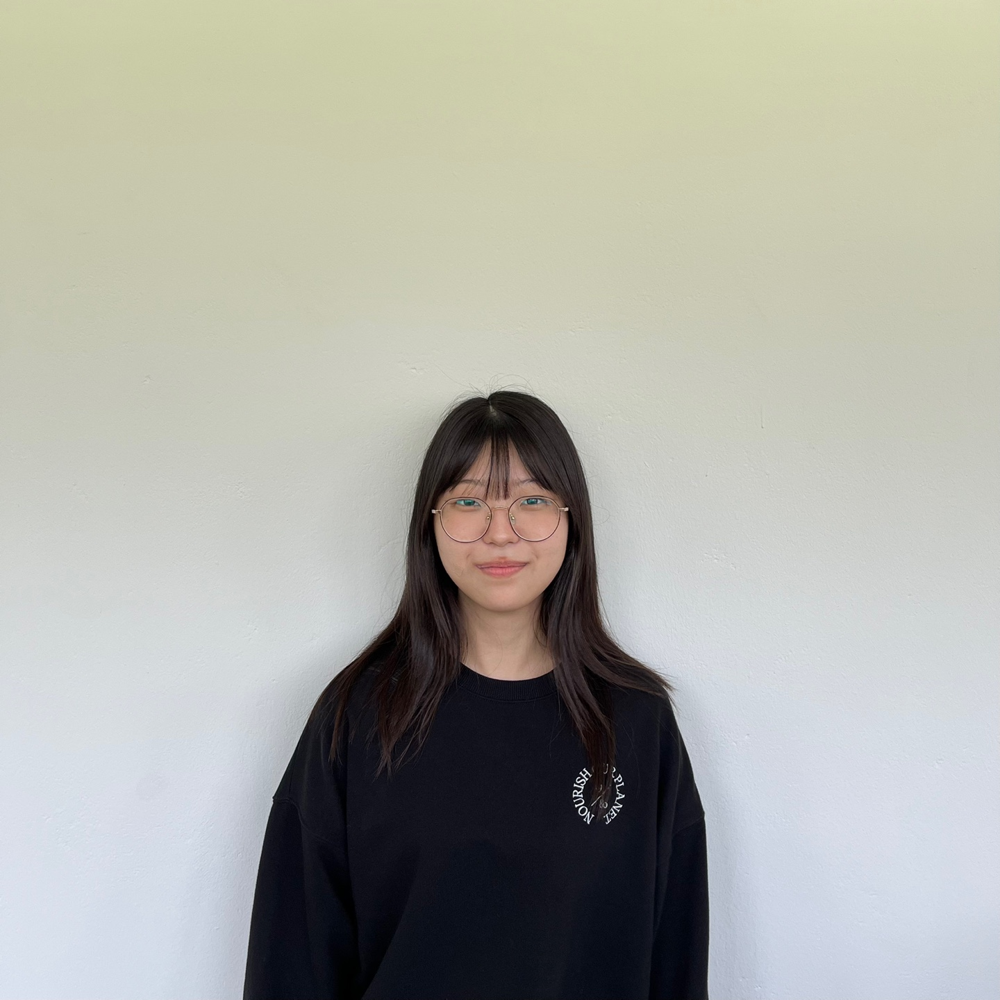
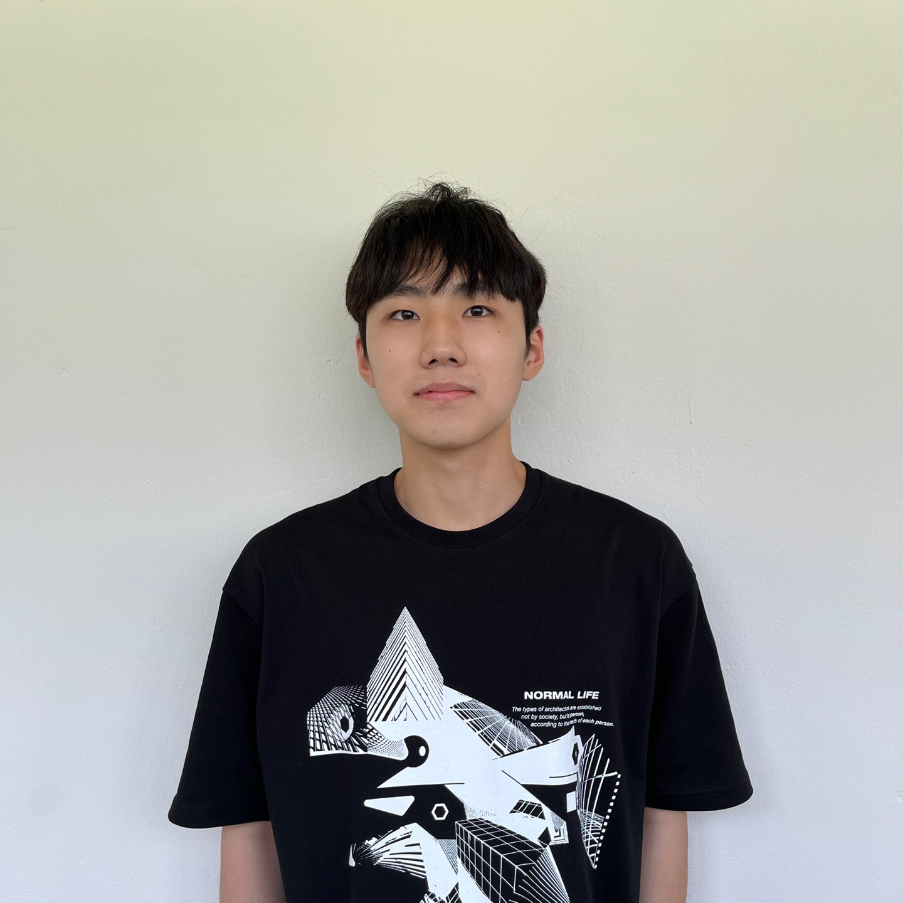
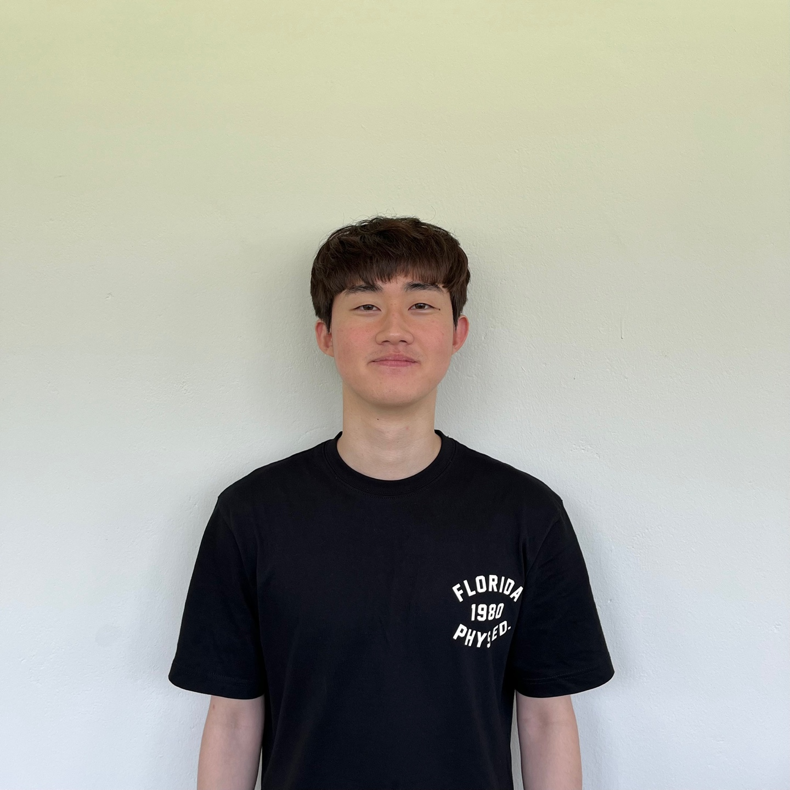

시작의 시작
DIT 인공지능컴퓨터정보과-

공민승
gwi5610@naver.com아두이노 제작 및 구성, 자료조사처음 주제를 선정할때는 뭐를 할지 막막 했지만 조원들이랑 열심히 생각 해본 결과 토양 감지 센서를 이용한걸 만들게 된다는 것을 확정 지었을때 부담감도 있었습니다 평소 개인 과제도 저한테는 잘 모르는 것들이 많아서 힘들었지만 조원들이랑 다 같이 한다니 안심이 되었고 또 조원들한테 민폐 끼치치 않아야 겠다는 생각을 했습니다 내가 할 수있는것들은 다해서 작품을 다 같이 완성해야겠다는 생각이 들었습니다. 아두이노 회로를 내가 직접 연결 해보니 처음 보는 부품들이 있어서 어려울꺼라 생각했지만 아두이노 회로도본이 있어서 엄청 어렵지 않게 만들수 있었습니다. 그리고 아두이노 회로에 문제 있을까봐 걱정했지만 다행히 문제가 없어서 안심이되었습니다. 그리고 조원들이 다 자기 할일을 다 성실히하는 모습에 저도 더 열심히 하게되었던거 같고 순조롭게 프로젝트가 진행되는거 같아서 안심이 되었습니다. 조별과제 발표일이 시험날이랑 가까워서 시험공부도 병행해야되서 힘들었지만 조원들이랑 대학교와서 처음 협동으로 뭘 만들었다는 생각에 너무 뿌듯하였습니다. 그리고 다들 너무 잘해주셔서 너무 감사하였고 다들 열심히한 완성품을 보니 성취감을 많이 느낀거 같습니다.그리고 개발자에 대하여 한 발짝 나갔다고 생각이 됩니다. -

김수린
v11673@naver.comPPT 제작, 회로도 제작, 영상편집주제 선정을 마쳤을 때 기대와 함께 잘 할 수 있을까하는 막연함도 느껴졌으나 조원들과 협동해 작품을 완성할 수 있도록 열심히 노력해야겠다는 생각을 했습니다. 회로도를 그리며 처음 보는 부품들이 많아 이렇게 연결하는 게 맞는지 많이 고민하고 찾아보았습니다. 하지만 테스트 단계에서 오류가 있었고 고민했던 배선 문제였습니다. 연결이 복잡했어서 문제를 찾기 쉽지 않았는데 팀원들과 함께 하니 빠르게 문제를 해결할 수 있었습니다. 팀을 서포트하고 시행착오에 도전하고 시도하며 결국 해결해 내었을 때 성취감과 뿌듯함을 느꼈습니다. 이번 팀 프로젝트는 성공적으로 작품을 만들었다는 것과 많은 것을 느끼고 공부했다는 것에 크게 만족하였습니다. 팀 프로젝트를 해내고 느낀 점은 나의 부족힌 점을 다른 팀원이 채워줄 수 있다는 것입니다. 프로젝트 준비를 하면서 같이 노력하는 열정있는 팀원들 덕분에 저 또한 고무되어 최선을 다할 수 있었습니다.
-

임승진
seungjin051@gmail.comHTML & CSS이제 1학기를 마치며 이때까지 배운 내용들을 하나의 결과물로 만든다는 것이 정말 흥미로웠고 즐겁게 느껴졌습니다 처음에는 각자 역할도 정하고 다양한 의견과 얘기를 하면서 서로의 생각을 나누는 것이 매우 즐거웠습니다 그리고 저는 프론트엔드 포지션을 맡아 기초적인 웹페이지를 구성하게 되었고 처음에는 어떻게 내가 페이지를 구성할지 와 디자인 그리고 코딩을 한 번에 해야 하니 막막했지만 이것도 개발자가 되기 위한 필수 덕목이라 생각하며 모르는 것이 있으면 직접 검색을 하고 공부도 하여서 원하는 기능을 계속 구축을 하니 이제는 두렵지 않고 어떻게 내가 구성을 할지, 어떤 코드를 내가 활용을 할 수 있는지를 찾아가며 공부하고 직접 만들어 내는 게 너무 즐거웠습니다. 웹페이지의 크기를 계속 늘려가니 이제는 어떤 식으로 내가 코딩을 하고 있는지를 잘 알게 되어서 고칠 점을 많이 느끼게 되었습니다. 그래서 앞으로 코딩을 하면 최대한 나 자신의 것으로 만들고 시간이 지나도 잘 읽을 수 있게끔 코딩을 하여서 앞으로 더욱 멋지고 훌륭한 개발자가 되고 싶습니다. -

조상원
sangwon8895@naver.com아두이노 제작 및 구성, 아두이노 코드 작성주제선정을 하고, 작품을 만드는 것을 직접 해본다고 하니 부담감이 생겼습니다. 수업시간에 배우지 않은 부품도 따로 독학을 해서 코드를 짜야하는것을 내가 잘 할 수 있을지 걱정되지만, 나만 그런게 아니니 최대한 열심히 해서 작품을 완성 시켜야겠다는 생각이 들었습니다. 아두이노 코드를 독학해서 짜보니 내가 뭘 해냈다는 뿌듯함이 들었고, 빨리 아두이노 키트와 연결을 해보고 싶은 마음이 듭니다. 조원들과 주기적으로 모여서 프로젝트에 대해 논의하고, 진행상황을 서로 알려주는데 다들 너무 맡은 부분을 성실히 잘 해줘서 순조롭게 프로젝트를 마무리 할 수 있을 거 같습니다. 시험공부와 병행하여 기말 과제를 하는 것이 결고 쉽지는 않았지만 혼자 하는 것이 아니라 조원들과 같이 협력하여 프로젝트를 진행하였기 때문에 무사히 끝낼 수 있었다고 생각합니다. 작품의 기획단계부터 최종 완성까지 저희끼리 해냈다는 것에 큰 성취감을 얻었고, 앞으로 개발자의 길을 걸으면서 마주할 일에 큰 도움이 될 거 같습니다.